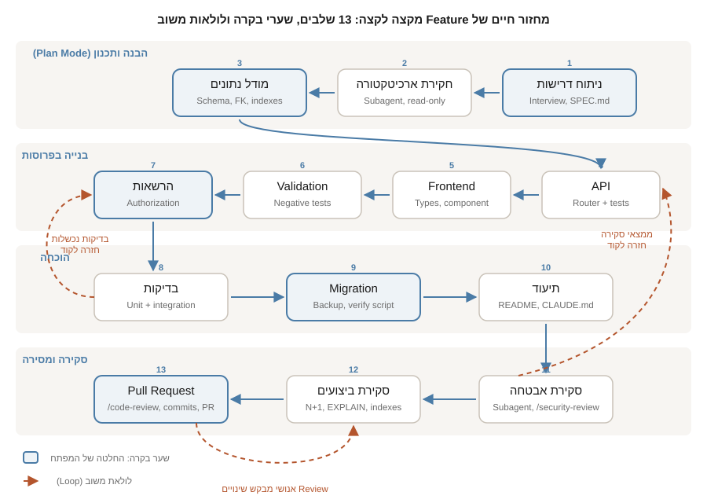

חלק ח | פרק 34
פיתוח Feature מורכב מקצה לקצה
זהו פרק תרחיש: הליכה מלאה, שלב אחרי שלב, דרך פיתוח Feature אמיתי ורב-שכבתי ב-TaskFlow, מהדרישה הראשונה ועד Pull Request שסוקר אנושי יכול לאשר. ה-Feature: תגובות על משימות עם אזכורים (@mentions). נעבור 13 תחנות: ניתוח דרישות, חקירת ארכיטקטורה, מודל נתונים, API, Frontend, Validation, הרשאות, בדיקות, Migration, תיעוד, סקירת אבטחה, סקירת ביצועים ו-PR. בכל תחנה: ה-Prompt המדויק, קטע פלט להמחשה, נקודת החלטה של המפתח, פקודת אימות ותוצאה צפויה, ובחירת Permission Mode, Model ו-Effort עם נימוק.
קטעי הפלט בפרק מסומנים "המחשה": הם מייצגים תשובה סבירה של Claude Code ולא תמליל של הרצה מסוימת. הפלט אצלכם ישתנה לפי הגרסה, המודל, ה-CLAUDE.md והמצב המדויק של ה-Repository. מה שלא ישתנה הוא מבנה השלבים, נקודות הבקרה ופקודות האימות. הפרק מניח שאתם שולטים בפרק 9 (התהליך המבוקר בן 15 השלבים) ומכירים את TaskFlow מפרק 6.
מה הופך Feature ל"מורכב", ולמה זה משנה
בפרק 9 הוספנו שדה אחד (priority) לטבלה קיימת. זה שינוי רב-שכבתי אבל צר: כל שכבה משתנה במקום אחד. Feature מורכב שונה בשלושה מובנים, וכל אחד מהם מוסיף נקודת בקרה לתהליך:
- ישות חדשה, לא שדה חדש: טבלה חדשה עם Foreign Key, מודלים חדשים, קבוצת Endpoints חדשה. ההחלטות התכנוניות (איך מאחסנים אזכורים? מה קורה לתגובות כשמוחקים משימה?) לא נגזרות מדפוס קיים; צריך לקבל אותן במפורש.
- שטח תקיפה חדש: קלט טקסט חופשי ממשתמשים, ניתוח מחרוזות (אזכורים), והרשאות (מי רשאי למחוק תגובה). כאן נכנסות סקירת אבטחה ייעודית ובדיקות שליליות.
- פרופיל ביצועים חדש: רשימת משימות שמציגה מספר תגובות היא המתכון הקלאסי ל-N+1. סקירת ביצועים היא שלב, לא מחשבה שאחרי.
מתי להשתמש בתהליך המלא של הפרק: כשה-Feature מוסיף ישות או יחסים בין ישויות, כשהוא מקבל קלט משתמש חדש, או כשהוא נוגע במעל חמישה קבצים בשתי שכבות ומעלה. מתי לא: שינוי בשכבה אחת, או הרחבה של ישות קיימת בשדה או שניים. שם התהליך של פרק 9 מספיק, ולעיתים אף פחות ממנו.
איך זה עובד מושגית: שערים, ראיות ולולאות
שלושה עקרונות מארגנים את כל הפרק, וכדאי להחזיק אותם בראש לפני שצוללים לתחנות:
- שער (Gate): נקודה שבה האדם מחליט, לא המודל. בפרק יש חמישה שערים מרכזיים: אישור ה-Spec, אישור הסכמה, החלטת ההרשאות, הרצת ה-Migration על נתונים אמיתיים, ופתיחת ה-PR. בשערים האלה עובדים במצב ברירת המחדל או ב-Plan Mode, אף פעם לא במצב שמאשר הכול.
- ראיה (Evidence): כל שלב מסתיים בפלט שאפשר להצביע עליו: שורת סיכום של
pytest, פלטEXPLAIN QUERY PLAN, תשובתcurl. התיעוד הרשמי מנסח זאת כך: בקשו מ-Claude להראות ראיות במקום להצהיר על הצלחה, כי סקירת ראיות מהירה מהרצה חוזרת של האימות. - לולאה (Loop): כשל בבדיקות, ממצא בסקירה או סטייה מה-Plan מחזירים אותנו לשלב הקוד, לא לתחילת התהליך. הלולאות קצרות בדיוק כי הפרוסות קטנות. אחרי שני סבבי תיקון כושלים על אותה בעיה, לפי ההמלצה הרשמית, עוצרים,
/clear, ומנסחים Prompt חדש שמשלב את מה שנלמד.
עותק עבודה של TaskFlow עם Git מאותחל ו-gh מחובר (פרק 13), Python 3.12, Node.js, pytest, וכלי sqlite3 בשורת הפקודה. מבחינת ידע: פרקים 7 (Plan Mode), 9 (התהליך המבוקר), 11 (Testing), 18 (Permission Modes) ו-25 (Subagents).
ה-Feature: תגובות על משימות עם אזכורים
הדרישה כפי שהגיעה מ"מנהל המוצר" של TaskFlow: "משתמשים רוצים לדון במשימות. כל משימה תוכל לקבל תגובות טקסט, ובתוך תגובה אפשר לאזכר משתמש עם @שם, כדי שבעתיד נוכל לשלוח לו התראה". זו דרישה טיפוסית: ברורה למראה, מלאה בשאלות פתוחות. עוד לפני שנפתח את Claude Code, נסמן מה בטוח בתחום ומה בטוח מחוץ לתחום:
- בתחום: טבלת
commentsעם FK למשימה; Endpoints ליצירה, רשימה, קריאה, עדכון ומחיקה של תגובות תחת/tasks/{id}/comments; חילוץ אזכורים מגוף התגובה ושמירתם בצורה שאפשר לשאול עליה; רשימת תגובות וטופס תגובה ב-Frontend; Migration לבסיסי נתונים קיימים; בדיקות; תיעוד. - מחוץ לתחום: התראות בפועל, עריכה עשירה (Markdown), קבצים מצורפים, ומערכת משתמשים מלאה. ל-TaskFlow אין היום אימות משתמשים, וזו נקודת ההחלטה הראשונה שלנו (ראו שלב 7).
מבנה הקבצים לפני, עם סימון של מה שצפוי להשתנות או להיווצר:
taskflow/
├── CLAUDE.md # ישתנה (קונבנציות חדשות)
├── README.md # ישתנה (תיעוד ה-API)
├── backend/
│ ├── app/
│ │ ├── main.py # ישתנה (רישום Router חדש)
│ │ ├── database.py # ישתנה (טבלאות + Migration + FK)
│ │ ├── models.py # ישתנה (מודלי Comment)
│ │ ├── mentions.py # חדש (חילוץ אזכורים, פונקציה טהורה)
│ │ └── routers/
│ │ ├── tasks.py # ישתנה (comment_count ברשימה)
│ │ └── comments.py # חדש
│ └── tests/
│ ├── test_tasks.py
│ ├── test_mentions.py # חדש (Unit)
│ └── test_comments.py # חדש (Integration)
└── frontend/src/
├── App.tsx # ישתנה (שילוב רכיב התגובות)
├── api.ts # ישתנה (קריאות חדשות)
├── types.ts # ישתנה (טיפוסי Comment)
└── Comments.tsx # חדש (רשימה + טופס)מפת המסע: 13 שלבים, שערי בקרה ולולאות משוב

הטבלה הבאה היא "לוח הבקרה" של הפרק. היא קובעת מראש, לכל שלב, את מצב ההרשאות, את המודל ואת רמת ה-Effort. ההיגיון: תכנון וסקירה הם השלבים שבהם טעות עולה הכי הרבה, ולכן מקבלים את המודל החזק ביותר ואת ההשקעה הגבוהה ביותר; מימוש מכני של תוכנית מאושרת יכול לרוץ על מודל מהיר יותר. הבחירה בין המודלים מוסברת בפרק 8, ומצבי ההרשאות בפרק 18. החלפת מודל באמצע Session נעשית עם /model, ורמת המאמץ עם /effort.
| # | שלב | Permission Mode | Model / Effort | נימוק |
|---|---|---|---|---|
| 1 | ניתוח דרישות | Plan Mode | Opus 5 / high | שאלות טובות כאן חוסכות סבבים בהמשך; אפס סיכון לקבצים |
| 2 | חקירת ארכיטקטורה | Plan Mode + Subagent | ברירת מחדל / high | קריאה מרובה של קבצים; Subagent שומר על ה-Context הראשי נקי |
| 3 | מודל נתונים | Plan Mode, ואז default | Opus 5 / high | החלטת סכמה היא ההחלטה הכי יקרה לשינוי בדיעבד |
| 4 עד 5 | API ו-Frontend | default (או acceptEdits) | Sonnet 5 / medium | מימוש של תוכנית מאושרת; הסקירה עוברת ל-/diff לפני כל Commit |
| 6 עד 7 | Validation והרשאות | default | Sonnet 5 / high | קוד קטן אבל רגיש; רוצים לראות כל עריכה |
| 8 | בדיקות | acceptEdits | Sonnet 5 / medium | הרבה קבצי בדיקה, סיכון נמוך; פקודות הרצה עדיין מאושרות ידנית |
| 9 | Migration | default | Opus 5 / high | נוגע בנתונים קיימים; כל פקודה נקראת לפני אישור |
| 10 | תיעוד | acceptEdits | Sonnet 5 / low | טקסט, לא לוגיקה |
| 11 עד 12 | סקירת אבטחה וביצועים | Subagent לקריאה בלבד | Opus 5 / xhigh | סוקר טרי, בלי גישת כתיבה, עם עומק חשיבה מרבי סביר |
| 13 | PR | default | Sonnet 5 / medium | פקודות Git ו-gh נוגעות בשרת מרוחק |
ה-Feature הזה גדול מכדי להיכנס בנוחות ל-Session אחד. ההמלצה שלנו, בהתאם להנחיה הרשמית ב-Best Practices: Session אחד לשלבים 1 עד 3 שמסתיים בקובץ SPEC.md מאושר; Session חדש ונקי למימוש (שלבים 4 עד 10) שקורא את ה-Spec; ו-Session שלישי לסקירות ול-PR. הפרדה כזאת גם מונעת את מצב "המפתח סוקר את עצמו": הסוקר בשלבים 11 עד 13 לא זוכר את ההנמקות שהובילו לקוד. על ניהול Context ומעבר בין Sessions ראו פרק 14.
שלב 1: ניתוח דרישות (Plan Mode)
פותחים את ה-Session ישירות ב-Plan Mode ומבקשים ראיון במקום לנסח לבד את כל הפרטים. זו הטכניקה שהתיעוד הרשמי ממליץ עליה ל-Features גדולים: Claude מראיין אתכם דרך הכלי AskUserQuestion וכותב Spec.
I want to add task comments with @mentions to TaskFlow.
In scope: comments table with FK to tasks, CRUD under
/tasks/{id}/comments, mention extraction from the comment body,
comment list + form in the frontend, migration for existing DBs,
tests, docs. Out of scope: notifications, rich text, attachments,
a full user system.
Interview me in detail using the AskUserQuestion tool. Don't ask
obvious questions; dig into data model, deletion semantics,
mention syntax edge cases, authorization, and performance.
Keep interviewing until we've covered everything, then write a
complete spec to SPEC.md with a numbered acceptance-criteria list.המחשה של השאלות שתקבלו (הניסוח ישתנה, הנושאים כמעט תמיד יופיעו):
1. When a task is deleted, should its comments be deleted too
(ON DELETE CASCADE) or should deletion be blocked?
2. Mention syntax: is "@alice" the whole grammar? What about
"@alice's", "email@example.com", "@" at end of text, unicode names?
3. Store mentions as a separate table (queryable) or as JSON on the
comment row (simpler)?
4. TaskFlow has no authentication. Who is the comment author, and who
may edit/delete a comment?
5. Should GET /tasks include a comment count? That affects the
list query.
6. Max comment length? Empty comments allowed?נקודת החלטה של המפתח: אלו ההחלטות שקיבלנו, וכדאי שתחליטו במודע ולא ברירת מחדל שקטה של המודל: (1) CASCADE: מחיקת משימה מוחקת את התגובות; (2) דקדוק אזכור: @ בתחילת מילה, אחריו אותיות לטיניות, ספרות, קו תחתון ומקף, באורך 2 עד 32; כתובת דוא"ל אינה אזכור; (3) טבלה נפרדת comment_mentions, כי הדרישה העתידית ("שליחת התראה") היא שאילתה לפי משתמש מאוזכר; (4) זהות דרך כותרת X-User, כתחליף זמני ומוצהר לאימות אמיתי, ראו שלב 7; (5) כן, comment_count ברשימת המשימות; (6) 1 עד 2000 תווים אחרי trim.
אימות: קובץ SPEC.md נוצר (ב-Plan Mode Claude יבקש אישור חריג לכתיבת הקובץ הזה, או יציג את התוכן ותכתבו אותו בעצמכם), ובו סעיף Acceptance Criteria ממוספר של 10 עד 15 שורות שכל אחת מהן ניתנת לבדיקה. אם יש שם משפט כמו "התגובות יעבדו כמצופה", החזירו לניסוח מדיד.
שלב 2: חקירת ארכיטקטורה (Subagent)
עדיין ב-Plan Mode. במקום שהשיחה הראשית תקרא עשרה קבצים, מאצילים את החקירה ל-Subagent ומקבלים רק את הממצאים (התיעוד הרשמי: "Delegate the exploration so only the findings come back"). על Subagents לעומק ראו פרק 25.
Use a subagent to investigate, read-only, how TaskFlow is
structured for adding a new resource: how routers are registered
in main.py, how database.py opens connections and initializes
schema (including whether SQLite foreign keys are enabled), how
tests set up their database, and how the frontend calls the API.
Report: (a) the conventions a new "comments" resource must follow,
(b) anything that would block a foreign key or a nested route,
(c) files that must change. No proposals yet.Conventions: one router per resource in app/routers/, prefix set on
APIRouter, registered with app.include_router in main.py. SQL is
parameterized, no ORM. Rows mapped by a private _row_to_* helper.
Blocker: SQLite does not enforce foreign keys unless
"PRAGMA foreign_keys = ON" runs per connection; get_conn() does not
set it, so ON DELETE CASCADE would silently not cascade.
Tests: TASKFLOW_DB env var points at a temp file; init_db() runs in
the client fixture, so new tables must be created there too.
Frontend: api.ts wraps fetch under /api; types.ts mirrors models.נקודת החלטה: הממצא על PRAGMA foreign_keys הוא בדיוק הסוג של דבר שמפתח מגלה בדרך כלל בשלב 9 או, גרוע מזה, ב-Production. הוא הופך להחלטה מפורשת: get_conn() ידליק את ה-PRAGMA על כל חיבור. אימות: בדקו את הטענה בעצמכם, זו הפעולה החשובה ביותר בשלב. grep -n "foreign_keys" backend/app/database.py אמור להחזיר כלום (הטענה נכונה), ו-sqlite3 :memory: "PRAGMA foreign_keys" מדפיס 0. אל תאמצו ממצא של Subagent על עיוור, גם כשהוא נשמע משכנע.
שלב 3: מודל הנתונים
עדיין ב-Plan Mode: מבקשים הצעת סכמה עם חלופות, לא סכמה יחידה.
Propose the SQLite schema for comments and mentions per SPEC.md.
Show the CREATE TABLE statements, the indexes you would add and
why, and one alternative you rejected with the reason. Consider:
FK with ON DELETE CASCADE, created_at/updated_at, author column,
and how comment_count for the task list will be computed.CREATE TABLE IF NOT EXISTS comments (
id INTEGER PRIMARY KEY AUTOINCREMENT,
task_id INTEGER NOT NULL
REFERENCES tasks(id) ON DELETE CASCADE,
author TEXT NOT NULL,
body TEXT NOT NULL,
created_at TEXT NOT NULL DEFAULT (datetime('now')),
updated_at TEXT NOT NULL DEFAULT (datetime('now'))
);
CREATE INDEX IF NOT EXISTS idx_comments_task_id ON comments(task_id);
CREATE TABLE IF NOT EXISTS comment_mentions (
comment_id INTEGER NOT NULL
REFERENCES comments(id) ON DELETE CASCADE,
username TEXT NOT NULL,
PRIMARY KEY (comment_id, username)
);
CREATE INDEX IF NOT EXISTS idx_mentions_username
ON comment_mentions(username);
-- Rejected: mentions as JSON text column on comments. Simpler, but
-- "all comments mentioning @alice" becomes a full scan with LIKE.נקודת החלטה: האינדקס על task_id הוא לא קישוט: כל טעינת תגובות של משימה וכל חישוב comment_count עוברים דרכו. אישרנו את הסכמה, ואז יצאנו מ-Plan Mode (Shift+Tab) וביקשנו את הפרוסה הראשונה של הקוד:
create branch feature/task-comments. Then implement only the data
layer: in database.py enable PRAGMA foreign_keys=ON in get_conn(),
add the two tables and indexes to init_db(). Add Pydantic models
CommentCreate, CommentUpdate, Comment to models.py (body 1..2000
chars after strip). Do not touch routers, frontend or tests yet.
Run pytest -q to confirm nothing existing broke.אימות: pytest -q ירוק (הבדיקות הקיימות לא יודעות על תגובות, ואסור להן להישבר), ואז ישירות מול הקובץ:
Commit ראשון כאן: Add comments and mentions schema with FK enforcement. ה-Diff קטן ונקרא בדקה.
שלב 4: ה-API
עכשיו הפרוסה הגדולה ביותר, ולכן מפצלים אותה לשתיים: קודם קריאה ויצירה, אחר כך עדכון ומחיקה. ה-Endpoints שנבנה:
| Method + Path | מטרה | קודי תשובה |
|---|---|---|
GET /tasks/{id}/comments | רשימת תגובות לפי סדר יצירה, כולל אזכורים | 200, 404 (משימה לא קיימת) |
POST /tasks/{id}/comments | יצירת תגובה; חילוץ ושמירת אזכורים | 201, 404, 422 |
GET /tasks/{id}/comments/{cid} | תגובה בודדת | 200, 404 |
PATCH /tasks/{id}/comments/{cid} | עדכון גוף; חישוב אזכורים מחדש | 200, 403, 404, 422 |
DELETE /tasks/{id}/comments/{cid} | מחיקה | 204, 403, 404 |
Implement app/mentions.py: a pure function extract_mentions(text)
-> list[str] per the grammar in SPEC.md (unique, in order of first
appearance, lowercase). Then app/routers/comments.py with GET list
and POST create only, following the style of routers/tasks.py
(parameterized SQL, _row_to_comment helper). POST must 404 when the
task does not exist and must store mentions in comment_mentions in
the same transaction. Register the router in main.py.
Then write tests/test_mentions.py (unit) and the first integration
tests in tests/test_comments.py, and run pytest -q.import re
_MENTION = re.compile(r"(?<![\w@.])@([A-Za-z0-9_-]{2,32})\b")
def extract_mentions(text: str) -> list[str]:
seen: list[str] = []
for m in _MENTION.finditer(text):
name = m.group(1).lower()
if name not in seen:
seen.append(name)
return seenנקודת החלטה: ההנחיה "in the same transaction" חשובה: get_conn() של TaskFlow עושה commit אחד ביציאה מה-Context Manager, ולכן הכנסת התגובה והאזכורים באותו בלוק with היא אטומית. אם Claude פותח שני חיבורים, זה באג של עקביות שיופיע רק תחת כשל. חפשו זאת ב-/diff. אימות: pytest -q ירוק, ואז בדיקה ידנית מול שרת חי:
הפרוסה השנייה של ה-API (GET בודד, PATCH, DELETE) מגיעה ב-Prompt נפרד באותו מבנה, אחרי Commit של הראשונה. את לוגיקת ה-403 נשאיר לשלב 7 במכוון, כדי שהיא תקבל סקירה משלה.
שלב 5: Frontend
Frontend slice: add Comment and CommentCreate to types.ts, add
listComments/createComment/deleteComment to api.ts (send the
X-User header from a constant CURRENT_USER for now, with a TODO
referencing SPEC.md section 7). Create Comments.tsx: a list of
comments for a task (author, body with @mentions rendered as
<strong>, relative time) and a form with a textarea and submit
button, disabled when empty. Wire it into App.tsx behind a
"comments" toggle per task. Run npm run typecheck and fix errors.
Do not add any dependency.נקודת החלטה: "Do not add any dependency" היא הגבלה מכוונת: ספריית זמן יחסי או ספריית Markdown הן בדיוק ה"שיפור" שמודל אוהב להציע, והן מרחיבות את שטח הסקירה ואת שרשרת האספקה. אימות: npm run typecheck נקי, ובדיקה ויזואלית בדפדפן: תגובה עם @alice מודגשת, טופס ריק מנוטרל. אם יש לכם את שילוב הדפדפן של Claude Code (פרק 27), בקשו צילום מסך והשוואה; אחרת, עין אנושית.
הדרך הקלה להדגיש אזכורים היא לבנות מחרוזת HTML ולהזריק אותה עם dangerouslySetInnerHTML. זו חולשת XSS קלאסית: גוף התגובה הוא קלט משתמש. הדרישה הנכונה: פיצול הטקסט למקטעים ורינדור כאלמנטים של React. אם ראיתם dangerouslySetInnerHTML ב-/diff, דחו וסקרו מחדש. נחזור לזה בשלב 11.
שלב 6: Validation
חלק מה-Validation כבר קיים דרך Pydantic (אורך הגוף). עכשיו סוגרים את המקרים השליליים באופן שיטתי:
Review the comments API against SPEC.md acceptance criteria 3 to 6
(validation). For each rule, tell me whether it is enforced, where,
and which test proves it. Then add the missing tests only:
empty/whitespace body -> 422, 2001 chars -> 422, unknown fields
ignored, non-integer task id -> 422, mention grammar edge cases
(email address, @ at end, unicode) covered in test_mentions.py.
Do not change production code unless a test reveals a real gap.נקודת החלטה: "Do not change production code unless a test reveals a real gap" הופך את השלב לביקורת ולא לכתיבה מחדש. בהמחשה שלנו התגלה פער אחד אמיתי: body של רווחים בלבד עבר, כי ה-min_length נבדק לפני ה-strip. התיקון: Validator שמסיר רווחים לפני בדיקת האורך. אימות: pytest -q עם מונה בדיקות שגדל, ובדיקה אחת מכוונת שנכשלת לפני התיקון ועוברת אחריו (בקשו מ-Claude להראות את שני הפלטים; ראיה, לא הצהרה).
שלב 7: הרשאות (Authorization)
כאן נקודת ההחלטה החשובה של הפרק. ל-TaskFlow אין מערכת משתמשים, והדרישה מדברת רק על "מי רשאי למחוק". שלוש אפשרויות עמדו על הפרק: (א) להתעלם מהרשאות עד שיהיה אימות אמיתי; (ב) לבנות אימות מלא, שמחוץ לתחום; (ג) להגדיר נקודת הרחבה אחת ומוצהרת: תלות של FastAPI בשם current_user() שקוראת היום את הכותרת X-User, ומחר תוחלף באימות אמיתי בלי לגעת ב-Router. בחרנו (ג), ותיעדנו במפורש שזה אינו אימות.
Add app/auth.py with a FastAPI dependency current_user() that reads
the X-User header (1..64 chars, same grammar as mentions) and
raises 401 if missing. Document in a module docstring that this is
a placeholder for real authentication and must not be deployed as
is. Use it in comments.py: author is always current_user on create;
PATCH and DELETE return 403 unless the requester is the author.
Add tests: other user cannot edit/delete (403), author can, missing
header is 401. Run pytest -q.כותרת X-User היא קלט של הלקוח. כל אחד יכול לשלוח כל ערך. הפתרון כאן לגיטימי אך ורק כנקודת הרחבה בסביבת פיתוח, ורק כי הפרויקט כולו אינו מוגן. אם ה-Feature שלכם נועד ל-Production, ההחלטה הנכונה היא לעצור כאן, לפתוח משימה נפרדת לאימות, ולחסום את Merge עד שהיא נסגרת. את ההחלטה הזאת מקבל אדם, לא המודל.
אימות: שלוש הבדיקות החדשות ירוקות, ובנוסף אימות שלילי ידני: curl -X DELETE ... -H "X-User: mallory" על תגובה של dana מחזיר 403 עם גוף שאינו חושף מי המחבר.
שלב 8: בדיקות (Unit ו-Integration)
בדיקות נכתבו לאורך הדרך; השלב הזה מוודא שהחבילה, כמכלול, מוכיחה את ה-Spec. מעבירים ל-acceptEdits (Shift+Tab), כי הולכות להיות הרבה עריכות בקבצי בדיקה וסיכון נמוך, ומריצים ביקורת כיסוי מול הקריטריונים:
Build a traceability table: each acceptance criterion in SPEC.md
-> the test function(s) that prove it, or "UNCOVERED". Add tests
for uncovered rows. Include: cascade delete (deleting a task removes
its comments and mentions; verify with a direct SELECT), mentions
recomputed on PATCH, comment_count in GET /tasks. Also add one
failure-path test per endpoint. Then run pytest -q and paste the
summary line.נקודת החלטה: טבלת העקיבות היא תוצר שנשמר (הוסיפו אותה ל-SPEC.md או לתיאור ה-PR). היא גם המקום שבו רואים "בדיקות ירוקות" שאינן מוכיחות כלום: בדיקה שקוראת ל-Endpoint ובודקת רק status_code == 200. בקשו להקשיח Asserts כאלה. על שיטת הבדיקות המלאה ראו פרק 11.
שלב 9: Migration
ב-SQLite אין כלי Migration מובנה, ו-ALTER TABLE מוגבל (אי אפשר להוסיף Foreign Key לטבלה קיימת בקלות, למשל). אצלנו המצב נוח: אנחנו מוסיפים טבלאות חדשות, לא משנים קיימות, ולכן CREATE TABLE IF NOT EXISTS ב-init_db() הוא Migration מספקת. מה שכן דורש מחשבה: בסיסי נתונים קיימים עם משימות, הפעלת ה-PRAGMA, וגיבוי.
Write a migration checklist for existing TaskFlow databases:
what init_db() will create on first start after upgrade, what it
will not change, and any risk (e.g. rows in tasks that a future FK
would orphan). Add a small script scripts/verify_schema.py that
prints the tables, indexes and PRAGMA foreign_keys of a given DB
file, exit code 1 if anything expected is missing. Do not modify
any database file yourself.נקודת החלטה: "Do not modify any database file yourself" היא הגבלה שכדאי להשאיר בכל Prompt שנוגע בנתונים: המודל כותב את הכלי, האדם מריץ אותו על הנתונים האמיתיים אחרי גיבוי. אימות על עותק של בסיס נתונים ותיק:
אם המבנה שלכם היה דורש שינוי טבלה קיימת (למשל הוספת FK ל-tasks), הייתם עוברים לאסטרטגיית Expand, Migrate, Contract שנלמד בפרק 35. תוכנית Rollback כאן פשוטה: החזרת קובץ הגיבוי והחזרת ה-Commit; רשמו אותה בתיאור ה-PR.
שלב 10: תיעוד
Update docs minimally: README.md gets a "Comments API" section
(endpoints table, X-User header note marked as placeholder auth,
mention grammar). CLAUDE.md Conventions gets two lines: mention
grammar and "comments are deleted with their task (CASCADE)". Keep
SPEC.md as the design record; add a "Decisions" list at the end
with the 6 decisions we made in the interview.למה גם CLAUDE.md: כל Session עתידי יקרא אותו (פרק 15). שורת "CASCADE" שם מונעת ממודל עתידי "לתקן" את המחיקה. אימות: Diff של קבצי טקסט בלבד; ודאו ששום קובץ קוד לא נגרר פנימה.
שלב 11: סקירת אבטחה (Subagent + /security-review)
עוברים ל-Session חדש (או לפחות /clear) כדי שהסוקר לא יהיה זה שכתב. שתי שכבות: Subagent ייעודי לקריאה בלבד, ואחריו הפקודה המובנית /security-review שבודקת את ה-Diff לחולשות. ה-Subagent מוגדר פעם אחת בפרויקט (הדוגמה מבוססת על התיעוד הרשמי, עם התאמה ל-TaskFlow):
---
name: security-reviewer
description: Reviews code changes for security vulnerabilities. Use before opening a PR.
tools: Read, Grep, Glob, Bash
model: opus
---
You are a senior security engineer reviewing a Python/FastAPI + React
change. Review only the diff of the current branch against main.
Check for: SQL injection (any non-parameterized SQL), XSS in the
frontend (dangerouslySetInnerHTML, unescaped user text), missing
authorization checks, information disclosure in error messages,
input length/format validation gaps, and secrets in code.
Report findings with file:line, severity (Critical/High/Medium/Low),
a concrete exploit scenario, and a suggested fix. Report only real
issues; do not report style.Use the security-reviewer subagent to review this branch against
main. Then I will run /security-review as a second opinion.HIGH routers/comments.py:71 PATCH builds "UPDATE comments SET ..."
from payload keys; keys come from a Pydantic model so today it
is safe, but a future field named with SQL would break it.
Fix: whitelist column names explicitly.
MED Comments.tsx:38 mention highlighting is safe (React elements),
but relative-time text uses innerHTML for a nbsp. Replace with
{' '}.
LOW auth.py: 401 body echoes the header value; remove echo.
INFO X-User placeholder documented; must be replaced before prod.נקודת החלטה: מאמצים ממצאים של נכונות ואבטחה, ודוחים בנימוק קצר מה שאינו כזה. התיעוד הרשמי מזהיר במפורש: סוקר שהתבקש למצוא פערים ימצא פערים; רדיפה אחרי כולם מובילה להנדסת יתר. אחרי התיקונים מריצים /security-review, ומצפים לרשימה ריקה או להערות שכבר טופלו. אימות: כל תיקון אבטחה מלווה בבדיקה שלילית (למשל בדיקה ש-PATCH עם שדה לא מוכר לא משנה כלום). ראו פרק 20 על אבטחה בעבודה עם Claude Code.
שלב 12: סקירת ביצועים
Performance review of the comments feature, read-only first:
(1) find any N+1 pattern (a query per task or per comment),
especially comment_count in GET /tasks and mentions in GET
comments; (2) run EXPLAIN QUERY PLAN for the three main queries
against a DB seeded with 1,000 tasks and 20,000 comments (write a
seed script under scripts/, do not run it against taskflow.db);
(3) confirm the indexes are used. Then propose the smallest change
that fixes each real problem.N+1 found: list_comments runs one SELECT per comment to fetch
mentions (200 comments -> 201 queries). Fix: single query with
"WHERE comment_id IN (...)" then group in Python; or LEFT JOIN +
group_concat. Chose IN + grouping (keeps _row_to_comment simple).
comment_count: implemented as correlated subquery in list_tasks;
EXPLAIN shows "SEARCH comments USING COVERING INDEX
idx_comments_task_id". OK.
Seeded 1,000/20,000: GET /tasks 12ms -> 12ms; GET comments for the
busiest task 140ms -> 9ms after fix.אימות: המספרים בהמחשה הם רק סדר גודל, אבל השיטה קבועה: מדידה לפני, מדידה אחרי, ו-EXPLAIN QUERY PLAN שמראה שימוש באינדקס. אל תקבלו "שיפרתי ביצועים" בלי מספרים. שינויי ביצועים נכנסים ב-Commit נפרד, כדי שאפשר יהיה להחזיר אותם בנפרד.
שלב 13: /code-review, Commits ו-Pull Request
לפני ה-PR, סקירת נכונות טרייה עם ה-Skill המובנה. הוא רץ ב-Subagent עם Context נקי; רמת המאמץ נבחרת בפקודה, ואפשר לבקש שיישם תיקונים עם --fix:
/code-review highאחרי הטיפול בממצאים, מסדרים את ה-Commits. הגרנולריות שאנחנו ממליצים עליה: Commit לכל שכבה או החלטה שאפשר להחזיר לבדה. כך נראתה ההיסטוריה של ה-Branch בסוף:
push the branch and open a PR using the template below. Fill every
section from SPEC.md, the traceability table and the review
findings. Do not invent test results: paste the last pytest and
typecheck summary lines.
## What
## Why (link SPEC.md)
## Decisions (6 from the interview)
## Acceptance criteria (checklist, each with proving test)
## How verified (pytest/typecheck/manual/EXPLAIN)
## Security review summary (findings + resolutions)
## Migration and rollback
## Known limitations (X-User placeholder!)
## Risks for the reviewer to focus onתוצאה צפויה: קישור ל-PR. ה-Session שיצר אותו דרך gh pr create מקושר אליו, ואפשר לחזור אליו עם claude --from-pr <number>. ה-PR הזה גדול מזה של פרק 9 (סדר גודל של 15 קבצים), אבל שמונה Commits ממוקדים ותיאור מובנה הופכים אותו לסקיר בפרוסות. אם הסוקר האנושי מבקש שינויים, חוזרים ללולאה: תיקון, /diff, בדיקות, Commit נוסף.
טעויות נפוצות
- לדלג על הראיון: להתחיל מ"תבנה תגובות" ולגלות את שאלת ה-CASCADE כשמישהו מוחק משימה ב-Production.
- לאמץ ממצא של Subagent בלי בדיקה: הממצא על
PRAGMA foreign_keysהיה נכון; הבא אולי לא יהיה. אמתו טענות עובדתיות בפקודה אחת. - לערבב שכבות בפרוסה אחת: "תבנה את ה-API והפרונט" מייצר Diff שאי אפשר לסקור.
- לתת למודל להחליט על הרשאות: ההחלטה על
X-Userהיא של האדם, כולל התיעוד שזה זמני. - להריץ Migration על נתונים אמיתיים מתוך ה-Session: המודל כותב כלי, האדם מריץ אחרי גיבוי.
- לקבל "שיפרתי ביצועים" בלי מספרים ובלי EXPLAIN.
- Commit אחד גדול בסוף: מאבד את היכולת להחזיר רק את שינוי הביצועים או רק את שינוי האבטחה.
Troubleshooting
| תסמין | אבחון וטיפול |
|---|---|
| סטייה מה-Plan: המימוש כולל דברים שלא סוכמו (למשל התראות) | עצרו עם Esc. הצביעו על הסעיף ב-SPEC.md ובקשו להחזיר את החלק העודף. אם זה חוזר, ה-Spec כנראה לא מספיק חד; חדדו אותו במקום להילחם בכל תור. /rewind מחזיר קוד ושיחה לנקודה שלפני הסטייה (פרק 19) |
| בדיקות שנכשלות מאוחר: הכול היה ירוק עד שלב 12, ועכשיו נשברות בדיקות ישנות | כמעט תמיד שינוי ביצועים או אבטחה ששינה חוזה בשקט (למשל סדר תגובות אחרי המעבר ל-IN). ה-Commit הנפרד מאפשר git stash או git revert נקודתי לזיהוי האשם. תקנו את הקוד, לא את הבדיקה, אלא אם הבדיקה הניחה סדר שלא הובטח מעולם |
| Context מתמלא באמצע המימוש; Claude מתחיל "לשכוח" את ה-Spec | אל תמשיכו לדחוף. /compact Focus on SPEC.md decisions, the files changed so far and the next slice, או טוב מזה: סיימו פרוסה ב-Commit, פתחו Session חדש שקורא את SPEC.md ואת git log. תהליך Handoff מסודר בין Sessions מתואר בפרק 14 |
| Claude מציע להוסיף ORM או ספריית Migration "כדי לפשט" | זה שינוי ארכיטקטוני מחוץ לתחום. סרבו, רשמו כרעיון ל-פרק 35, והמשיכו |
| Cascade לא עובד בבדיקה למרות ON DELETE CASCADE | ה-PRAGMA לא הופעל על החיבור הזה. ודאו ש-get_conn() מריץ PRAGMA foreign_keys = ON אחרי כל connect, לא פעם אחת ב-init_db |
| הסוקר האוטומטי מציף עשרות הערות סגנון | חדדו את ה-Prompt: "Report gaps that affect correctness or the stated requirements only". דחו את השאר בנימוק |
Security
- קלט: כל SQL עם פרמטרים; שמות עמודות ב-
UPDATEמרשימה קבועה; אורך ודקדוק נאכפים בשרת, לא רק ב-Frontend. - פלט: אזכורים מודגשים דרך אלמנטים, לא HTML גולמי; הודעות שגיאה לא מהדהדות קלט.
- הרשאות: נקודת הרחבה אחת (
current_user), בדיקות 401 ו-403, ותיעוד גלוי שהמנגנון הנוכחי הוא Placeholder. אין Merge ל-Production לפני החלפתו. - תהליך: סוקר האבטחה הוא Subagent ללא כלי כתיבה, ואחריו
/security-review. ראו פרק 20 ו-פרק 25.
עלות ו-Context
ה-Feature הזה, במימוש מלא, צורך סדר גודל של כמה מאות אלפי Tokens לאורך שלושה Sessions; המספר המדויק תלוי במודל וב-Effort. שלושת החיסכונות המשמעותיים: (1) הראיון וה-Spec מקטינים סבבי תיקון, שהם הבזבזן הגדול; (2) האצלת החקירה והסקירות ל-Subagents שומרת את ה-Context הראשי קטן; (3) הורדת Effort ל-medium או low בשלבים מכניים (מימוש לפי תוכנית, תיעוד) והעלאתו רק בתכנון ובסקירה. עקבו עם /context ו-/cost; ראו פרק 30.
Best Practices
- ראיון לפני תכנון, Spec לפני קוד, Session טרי למימוש.
- כל החלטה תכנונית (CASCADE, מבנה אזכורים, הרשאות) נרשמת ב-
SPEC.mdובתיאור ה-PR. - פרוסה = שכבה אחת = Commit אחד = פקודת אימות אחת שרצה בפועל.
- ממצאי Subagent עוברים אימות עצמאי בפקודה אחת לפני שהם הופכים להחלטה.
- סקירת אבטחה וביצועים ב-Context נקי, בקריאה בלבד, עם ראיות (בדיקה שלילית,
EXPLAIN, מדידה). - נתונים אמיתיים: גיבוי, כלי אימות, הרצה ידנית. לעולם לא מתוך ה-Session.
/code-reviewלפני כל PR, ותיאור PR לפי תבנית קבועה.
Anti-patterns
- ה-Prompt הכוללני: "add comments with mentions, tests and a PR" במצב שמאשר הכול. עובד לפעמים; כשלא, אין דרך לדעת איזה חלק שבור.
- הסוקר המאוהב: לבקש מאותו Session שכתב את הקוד גם לאשר שהוא בטוח.
- ההרשאה המשתמעת: להשאיר את
X-Userבלי תיעוד, בלי משימת המשך ובלי חסימת Merge. - ביצועים בהרגשה: "נראה מהיר" במקום מדידה ו-
EXPLAIN. - הבדיקה שמאשרת 200: בדיקה שלא בודקת תוכן ולא בודקת כשל.
תרגיל
הריצו את 13 השלבים על דרישה חדשה ב-TaskFlow: לכל משימה יהיה due_date אופציונלי (תאריך ISO), ו-Endpoint חדש GET /tasks/due?within=3d שמחזיר משימות פתוחות שמועדן בתוך חלון זמן. בנוסף, "תזכורות": טבלת reminders (משימה, זמן, האם נשלחה) עם יצירה, רשימה ומחיקה, ופקודת CLI קטנה שמדפיסה תזכורות שהגיע זמנן (שליחה בפועל מחוץ לתחום). נהלו ראיון, כתבו SPEC.md, והקפידו על: Migration לעמודה חדשה בטבלה קיימת (כמו בפרק 9), FK עם CASCADE, אינדקס על זמן התזכורת, בדיקת אזורי זמן, סקירת אבטחה וביצועים, ו-PR לפי התבנית.
פתרון מוסבר
שאלות הראיון שחייבות לעלות: אזור זמן (המלצה: לאחסן UTC ב-ISO 8601 ולתעד זאת), האם due_date בעבר מותר ביצירה (כן, עם אזהרה ב-UI, לא 422), מה קורה לתזכורות כשמשימה מסומנת done (נמחקות או מסומנות כלא רלוונטיות; בחרו ותעדו), ופרשנות within (3d, 12h; מקסימום 90 יום; ערך לא חוקי מחזיר 422).
מודל נתונים: ALTER TABLE tasks ADD COLUMN due_date TEXT ב-Migration מבוססת PRAGMA table_info, כפי שעשינו לעמודת priority; טבלת reminders(id, task_id FK CASCADE, remind_at TEXT NOT NULL, sent INTEGER NOT NULL DEFAULT 0) עם אינדקס (sent, remind_at), כי השאילתה של ה-CLI היא "לא נשלחו ומועדן עבר". EXPLAIN QUERY PLAN חייב להראות שימוש בו.
API: שימו לב לקונפליקט נתיבים: GET /tasks/due חייב להיות מוגדר לפני GET /tasks/{task_id}, אחרת FastAPI ינסה להמיר "due" למספר ויחזיר 422. זו בדיוק תגלית שראיון או חקירה טובים מציפים; אם פספסתם, הבדיקה תתפוס.
אבטחה: פרמטר within הוא קלט; פרסור עם ביטוי רגולרי מוגבל, לא eval ולא שרשור לשאילתה. ה-CLI לא מקבל נתיב בסיס נתונים מהמשתמש בלי אימות. ביצועים: רשימת המשימות עם "יש תזכורת ממתינה" היא שוב מועמדת ל-N+1; פתרו ב-EXISTS או ב-IN.
סיום: טבלת עקיבות, /security-review, /code-review high, שישה עד שמונה Commits, ו-PR שבו סעיף "Known limitations" מציין שאין שליחה בפועל ואין אימות משתמשים.
סיכום
פיתוח Feature מורכב עם Claude Code אינו Prompt אחד גדול אלא רצף של שערים: ראיון ו-Spec ב-Plan Mode, חקירה מואצלת עם אימות עצמאי של הממצאים, החלטת סכמה מפורשת, מימוש בפרוסות של שכבה אחת עם Commit ואימות בכל פרוסה, Validation והרשאות כשלבים נפרדים שבהם האדם מחליט, בדיקות שמוכיחות את ה-Spec דרך טבלת עקיבות, Migration שהאדם מריץ אחרי גיבוי, תיעוד באותו Branch, סקירת אבטחה וביצועים ב-Context נקי עם ראיות, ולבסוף /code-review ו-PR מובנה. בפרק הבא ניקח את אותם עקרונות למקום שבו הסיכון גבוה יותר: Migration ו-Refactoring בקנה מידה גדול.
Best practices (verification, plan mode, interview with AskUserQuestion, subagents for review, adversarial review, security-reviewer example) | Common workflows (delegate research to subagents, plan before editing, PR creation, --from-pr) | Commands reference (/code-review, /security-review, /diff, /rewind, /compact, /context, /plan) | Subagents (frontmatter, tools, model, invocation) | Permission modes (plan, acceptEdits, auto) | נבדק: 29.07.2026